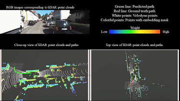
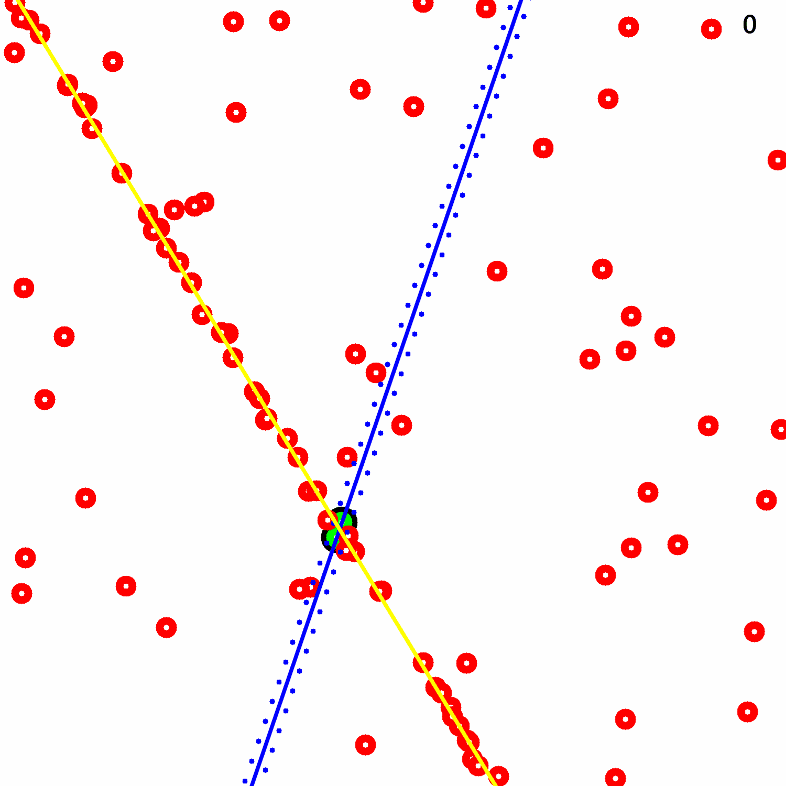

2D-3D localization
End-to-end 2D-3D Registration between Image and LiDAR Point Cloud
A vehicle localization pipeline that directly aligns image observations with LiDAR point clouds for robust real-world positioning.
Research
PIRLab studies the full loop of embodied intelligence: rich 3D sensing, predictive world models, and action policies grounded in physical structure.
Overview
We do not treat perception, prediction, and control as isolated modules. Our research aims to build robot systems in which scene understanding improves forecasting, forecasting improves planning, and action closes the loop back onto better representations.
The shared theme is physical realism: models should respect geometry, semantics, dynamics, and contact, and should matter on real robots rather than only on offline benchmarks.
Selected Work
2D-3D localization
A vehicle localization pipeline that directly aligns image observations with LiDAR point clouds for robust real-world positioning.


3D scene flow
Scene-flow learning for dynamic 3D worlds, combining pseudo auto-labelling and uncertainty-aware diffusion refinement.


LiDAR odometry
Learning-based LiDAR odometry that estimates robust 3D motion from large-scale point clouds.

01
We develop robot perception models that read geometry, semantics, correspondence, and motion from RGB, RGB-D, LiDAR, and multi-modal point clouds. This includes localization, odometry, registration, semantic segmentation, dense mapping, and dynamic scene understanding.
Typical questions include how to align 2D and 3D observations, how to represent large-scale scenes efficiently, and how to reason about time so that vision becomes 4D rather than a collection of still frames.
02
We investigate predictive models that forecast scene flow, semantic evolution, latent map states, and action-conditioned changes in the environment. This includes diffusion models, neural implicit representations, Gaussian scene models, and future-conditioned perception.
The goal is not just prediction for its own sake. We want world models that make robots plan better, simulate better, recover from partial observability, and transfer learning more effectively between real and virtual environments.
03
We study how structured perception and predictive models can improve robotic manipulation, robust estimation, and embodied decision making. Our interest is in methods that preserve physical meaning instead of treating action as a purely black-box policy problem.
Current themes include real-to-sim-to-real learning, contact-rich manipulation, reinforcement learning with priors, and action pipelines built on geometry-aware scene representations.